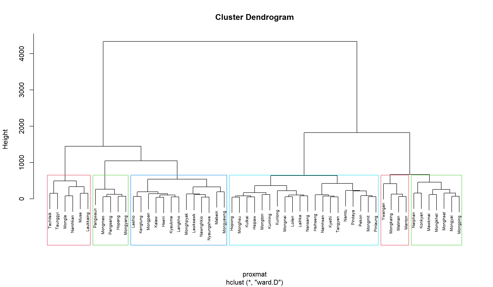
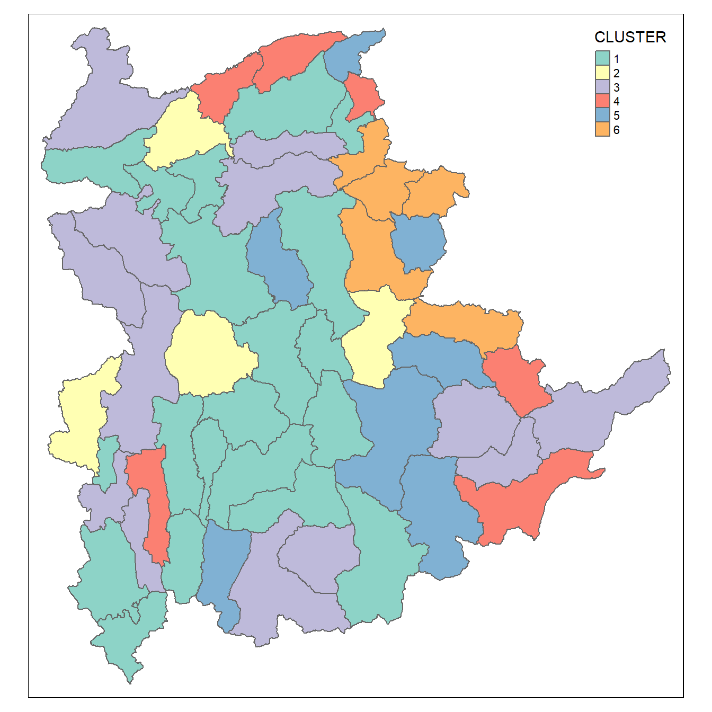
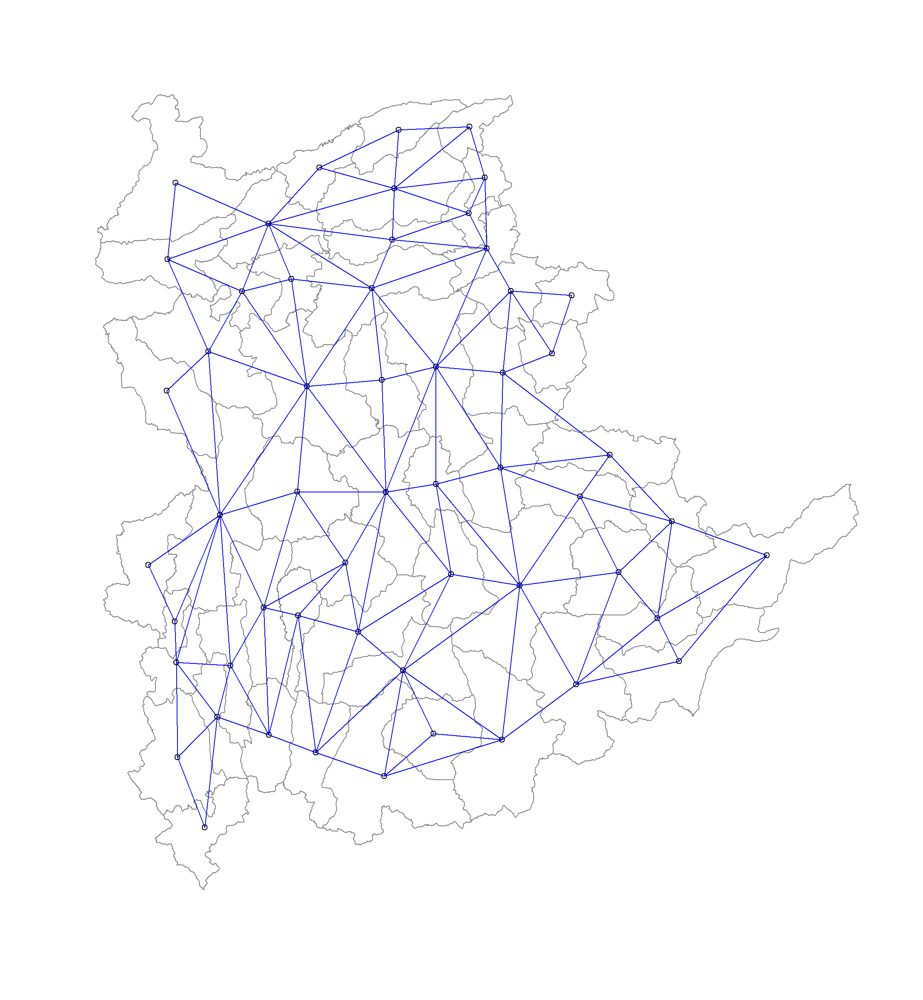
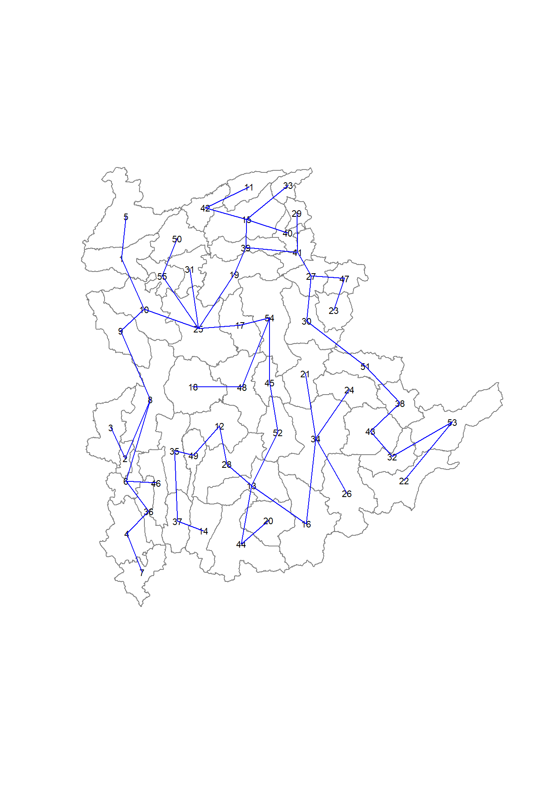
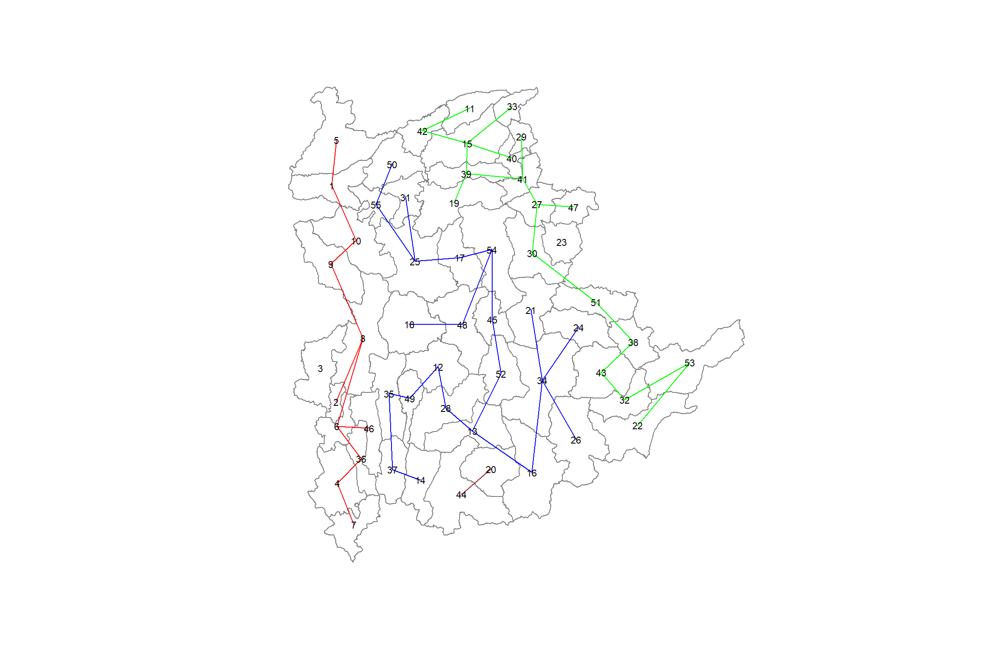
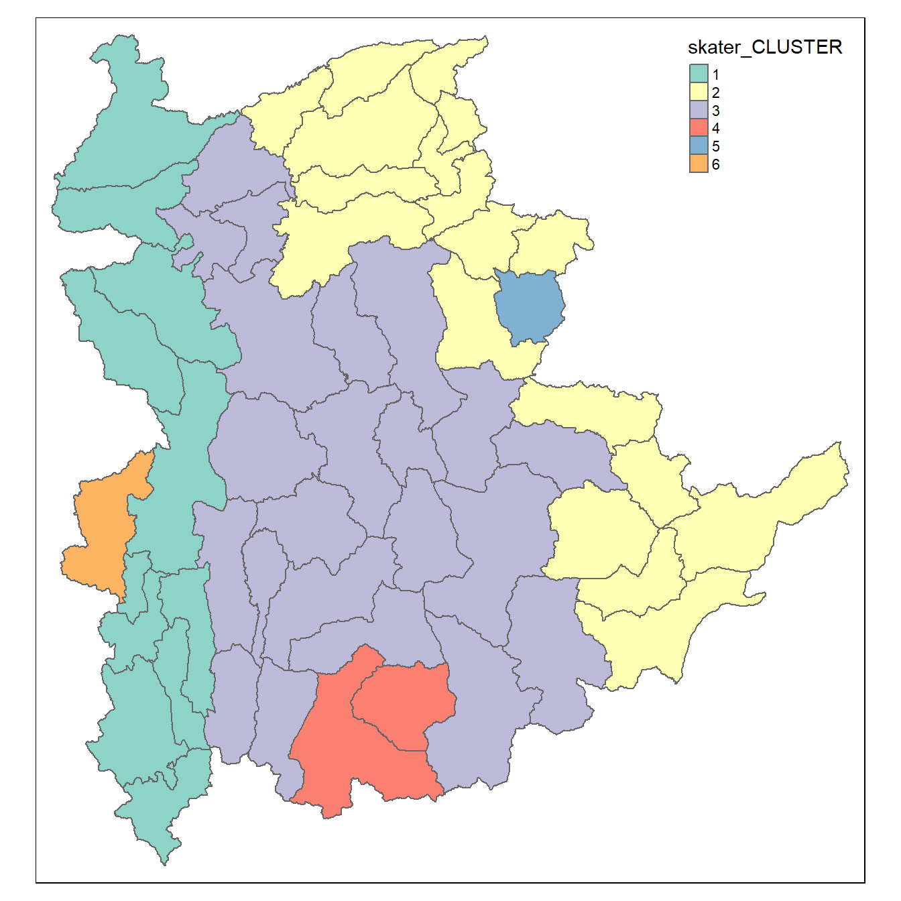
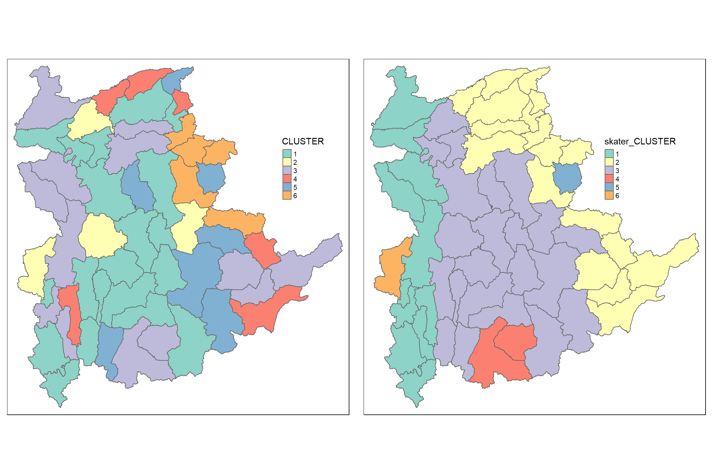
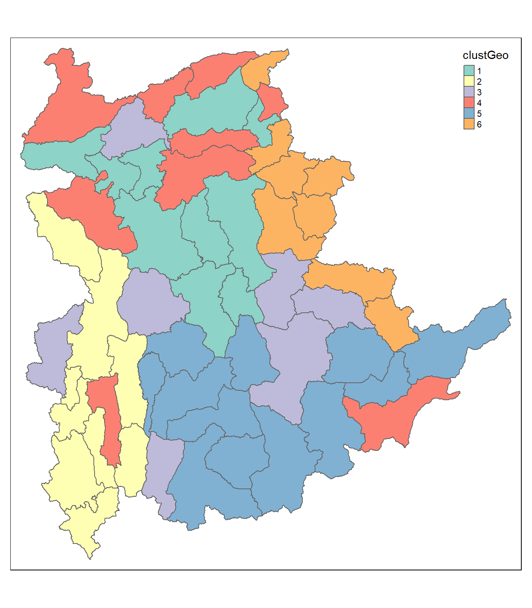
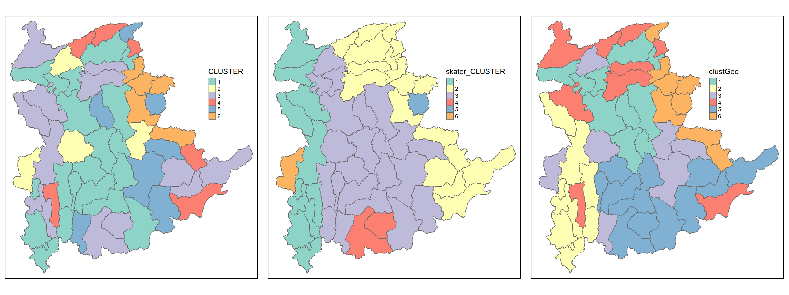
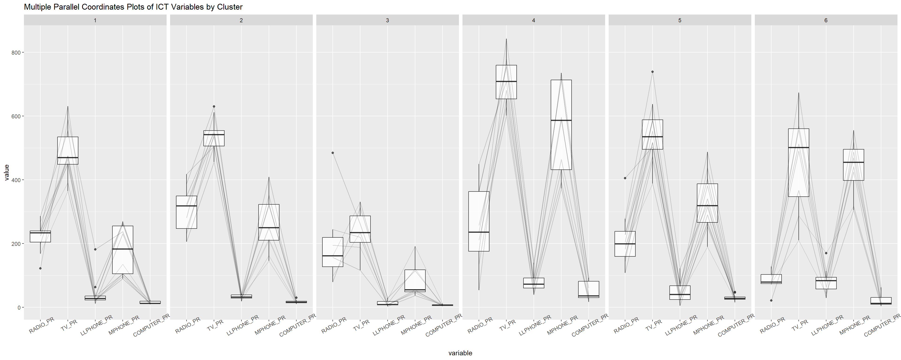

pacman::p_load(spdep, sp, tmap, sf, ClustGeo, cluster, factoextra, NbClust, tidyverse, GGally)ICE7
import from rds
shan_sf <- read_rds("data/rds/shan_sf.rds")
shan_ict <- read_rds("data/rds/shan_ict.rds")
shan_sf_cluster <- read_rds("data/rds/shan_sf_cluster.rds")Conventional Hierarchical Clustering
Hierachical clustering
proxmat <- dist(shan_ict, method = 'euclidean')
hclust_ward <- hclust(proxmat, method = 'ward.D')
groups <- as.factor(cutree(hclust_ward, k=6))Append to the geospatial data
shan_sf_cluster <- cbind(shan_sf,
as.matrix(groups)) %>%
rename(`CLUSTER`=`as.matrix.groups.`) %>%
select(-c(3:4, 7:9)) %>%
rename(TS = TS.x)The dendrogram
plot(hclust_ward, cex = 0.6)
rect.hclust(hclust_ward, k = 6, border = 2:5)
Cluster map
qtm(shan_sf_cluster, "CLUSTER")
#qtm useful for categorical dataSpatially Constrained Clustering: SKATER method
Computing nearest neighbours
shan.nb <- poly2nb(shan_sf)
summary(shan.nb)Neighbour list object:
Number of regions: 55
Number of nonzero links: 264
Percentage nonzero weights: 8.727273
Average number of links: 4.8
Link number distribution:
2 3 4 5 6 7 8 9
5 9 7 21 4 3 5 1
5 least connected regions:
3 5 7 9 47 with 2 links
1 most connected region:
8 with 9 linksVisualising the neighbours
plot(st_geometry(shan_sf),
border=grey(.5))
pts <- st_coordinates(st_centroid(shan_sf))
plot(shan.nb,
pts,
col="blue",
add=TRUE)Warning: st_centroid assumes attributes are constant over geometries
Computing minimum spanning tree
Calculating edge costs
lcosts <- nbcosts(shan.nb, shan_ict)Incorporating these costs into a weights object
shan.w <- nb2listw(shan.nb,
lcosts,
style="B")
summary(shan.w)Characteristics of weights list object:
Neighbour list object:
Number of regions: 55
Number of nonzero links: 264
Percentage nonzero weights: 8.727273
Average number of links: 4.8
Link number distribution:
2 3 4 5 6 7 8 9
5 9 7 21 4 3 5 1
5 least connected regions:
3 5 7 9 47 with 2 links
1 most connected region:
8 with 9 links
Weights style: B
Weights constants summary:
n nn S0 S1 S2
B 55 3025 76267.65 58260785 522016004style = “B” > binary calc , impt, nochangethis
Computing MST
shan.mst <- mstree(shan.w)Visualising MST
plot(st_geometry(shan_sf),
border=gray(.5))
plot.mst(shan.mst,
pts,
col="blue",
cex.lab=0.7,
cex.circles=0.005,
add=TRUE)
Computing spatially constrained clusters using SKATER method
skater.clust6 <- skater(edges = shan.mst[,1:2],
data = shan_ict,
method = "euclidean",
ncuts = 5)Skater tree
Warning in segments(coords[id1, 1], coords[id1, 2], coords[id2, 1], coords[id2,
: "add" is not a graphical parameter
Warning in segments(coords[id1, 1], coords[id1, 2], coords[id2, 1], coords[id2,
: "add" is not a graphical parameter
Warning in segments(coords[id1, 1], coords[id1, 2], coords[id2, 1], coords[id2,
: "add" is not a graphical parameter
Warning in segments(coords[id1, 1], coords[id1, 2], coords[id2, 1], coords[id2,
: "add" is not a graphical parameter
Plot skater tree
plot(st_geometry(shan_sf),
border=gray(.5))
plot(skater.clust6,
pts,
cex.lab=.7,
groups.colors=c("red","green","blue", "brown", "pink"),
cex.circles=0.005,
add=TRUE)Visualising the clusters in choropleth map

groups_mat <- as.matrix(skater.clust6$groups)
shan_sf_spatialcluster <- cbind(shan_sf_cluster, as.factor(groups_mat)) %>%
rename(`skater_CLUSTER`=`as.factor.groups_mat.`)
qtm(shan_sf_spatialcluster, "skater_CLUSTER")Plotting the cluster maps
hclust.map <- qtm(shan_sf_cluster,
"CLUSTER") +
tm_borders(alpha = 0.5) +
tm_layout(legend.position = c(0.8, 0.6))
shclust.map <- qtm(shan_sf_spatialcluster,
"skater_CLUSTER") +
tm_borders(alpha = 0.5) +
tm_layout(legend.position = c(0.7, 0.6))
tmap_arrange(hclust.map, shclust.map,
asp=NA, ncol=2)Warning: One tm layer group has duplicated layer types, which are omitted. To
draw multiple layers of the same type, use multiple layer groups (i.e. specify
tm_shape prior to each of them).
Warning: One tm layer group has duplicated layer types, which are omitted. To
draw multiple layers of the same type, use multiple layer groups (i.e. specify
tm_shape prior to each of them).
ClustGeo Spatially Constrained Clustering
Computing spatial distance matrix
dist <- st_distance(shan_sf, shan_sf)
distmat <- as.dist(dist)Cluster graphs


cr <- choicealpha(proxmat, distmat,
range.alpha = seq(0, 1, 0.1),
K=6, graph = TRUE)Saving clustGeo output
clustG <- hclustgeo(proxmat, distmat, alpha = 0.2) #<- alpha from graphs above
groups <- as.factor(cutree(clustG, k=6))
shan_sf_clustGeo <- cbind(shan_sf,
as.matrix(groups)) %>%
rename(`clustGeo` = `as.matrix.groups.`)Visualising the clustGeo map
qtm(shan_sf_clustGeo, "clustGeo")
Comparing cluster maps
hclust.map <- qtm(shan_sf_cluster,
"CLUSTER") +
tm_borders(alpha = 0.5) +
tm_layout(legend.position = c(0.8, 0.6))
shclust.map <- qtm(shan_sf_spatialcluster,
"skater_CLUSTER") +
tm_borders(alpha = 0.5) +
tm_layout(legend.position = c(0.7, 0.6))
clustGeo.map <- qtm(shan_sf_clustGeo,
"clustGeo") +
tm_borders(alpha = 0.5) +
tm_layout(legend.position = c(0.7, 0.6))
tmap_arrange(hclust.map, shclust.map,
clustGeo.map,
asp=NA, ncol=3)Warning: One tm layer group has duplicated layer types, which are omitted. To
draw multiple layers of the same type, use multiple layer groups (i.e. specify
tm_shape prior to each of them).
Warning: One tm layer group has duplicated layer types, which are omitted. To
draw multiple layers of the same type, use multiple layer groups (i.e. specify
tm_shape prior to each of them).
Warning: One tm layer group has duplicated layer types, which are omitted. To
draw multiple layers of the same type, use multiple layer groups (i.e. specify
tm_shape prior to each of them).
Characterising the clusters

ggparcoord(data = shan_sf_clustGeo,
columns = c(17:21),
scale = "globalminmax",
alphaLines = 0.2,
boxplot = TRUE,
title = "Multiple Parallel Coordinates Plots of ICT Variables by Cluster") +
facet_grid(~ clustGeo) +
theme(axis.text.x = element_text(angle = 30))